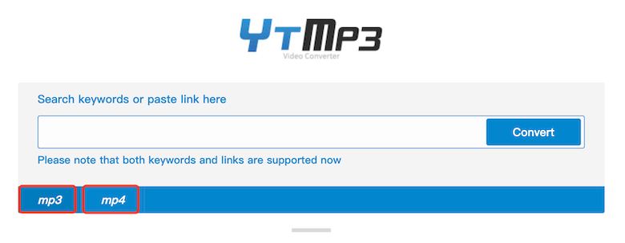
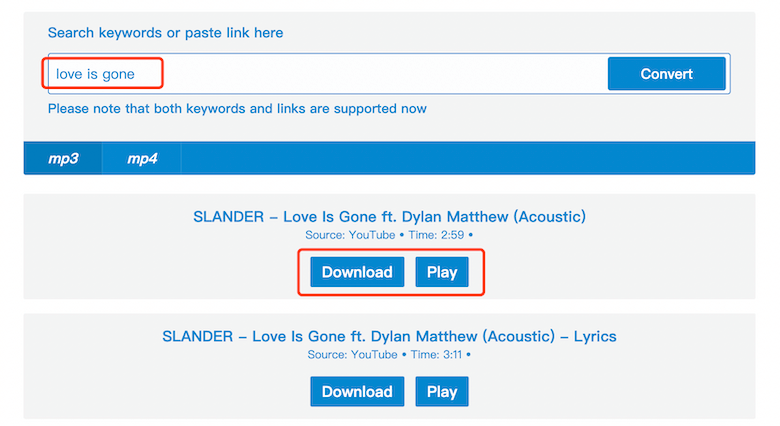

🌟 YTMP3 Quick Download!
Insert "ccc" after the word "youtube"or "youtu" in the link to download videos and mp3 files from YouTube as a faster way.
Example:
https://youtubeccc.com/watch?v=7I8ctDJkDLc
https://youtuccc.be/-wtIMTCHWuI
https://m.youtubeccc.com/watch?v=RiJ172JBfrA
ytmp3.cc/http://youtube.com/watch?v=7I8ctDJkDLc
🌟 Use YTMP3 browser bookmark for quicker mp3 downloads
Youtube ConvertDrag this button to your bookmarks bar, and later when you're browsing on a video or music that you want to download, you just click the bookmark.
The best YouTube to MP3 Converter & Downloader
YouTube mp3 download has become very easy, using Ytmp3 you only need 1 second to easily achieve YouTube to mp3. In Ytmp3, you just need to enter the YouTube URL/TikTok URL into the Ytmp3 search box, click "Convert", then you can get YouTube/TikTok mp3 or mp4. After TikTok is converted, there is no watermark, which is very convenient.
YTMP3 is a YouTube downloader that helps you convert Youtube videos to Mp3 and save them to your device. You can easily achieve YouTube to mp3, YouTube to mp4, TikTok watermark-free downloads, and mp3 search downloads.
YTMP3.cc is a popular youtube to mp3 website. It has a history of decades. In the course of ten years of development, it has won the favor of countless users, and also provides a lot of youtube mp3 and mp4 music services for everyone, so many users spontaneously to promote ytmp3, thank you for your love, and we will continue to optimize our functions to provide you with better mp3 download functions. During the development of YTMP3, there have been many imitators of YTMP3. Please look for YTMP3.cc, which is the official website of YTMP3.
Ytmp3 is an excellent YouTube to mp3 converter, the purpose is to make it easy for users to convert YouTube videos to mp3 or mp4, and download them to their mobile phones or car devices, so that they can still be listened to when there is no network. Want to listen to YouTube music. Ytmp3 has been operating successfully for 10 years, and has experienced great twists and turns during these 10 years, but it has helped hundreds of millions of users to download YouTube music. Ytmp3 will continue to be maintained to provide users with more convenience.
YTMP3 is an mp3 download site and a free search engine for searching the web for MP3 audio files. Download your favorite songs in mp3 format or video by entering a search term in the YTMP3 search box or a Youtube link. So YTMP3 has many functions, such as song search, song download, ad-free playback of YouTube videos, and downloading Tiktok videos without watermarking.
The use of YTMP3 is also very simple, insert the link into the search bar and click the convert button. The conversion begins and the audio file will be ready to download within a few minutes. The conversion process starts, and YTMP3 downloader provides high-quality mp3 music for download for free. The most attractive aspect of Mp3 downloader software is that it does not require you to install any app or software on your device.
Many people will ask where is the youtube link. If you open youtube on a computer, just copy the link in your browser. If it is a Youtube app, click the [share] button below any video, the first option in it is [copy link], click [copy link] to the search box of ytmp3, and you can download the corresponding mp3 or mp4.
How to use Youtube to Mp3 YTMP3?
1. Select the file format you want to download, you can download mp3 or mp4, Ytmp3 downloads mp3 files by default.

2. Enter song keywords or Youtube links in the search box to download your favorite songs

YTMP3 - Best Youtube mp3 converter and downloader
Ytmp3 is specifically designed to save Youtube video on your android smartphone. Just install it and save any video to your device in just one click from the youtube app or from the ytmp3.cc app dashboard.
YTMP3 - Faster MP3 download speed
YTMP3.cc is a ten-year-old YouTube download and convert tool that provides music download services to millions of users daily. In order to provide users with a better music download experience, we have recently increased the speed of video downloads. I believe users who use YTMP3 will have a more intuitive experience. After entering the Youtube link, it only takes three seconds and you can download the corresponding MP3 file.
The MP3 download speed of YTMP3 has been increased from 3 minutes to within 5 seconds. This speed optimization is a qualitative leap. It is believed that this 300% download speed increase will make users more trusting in YTMP3 and more willing to use our website.
Some users must be wondering how YTMP3 can quickly increase the download speed of MP3. That is because YTMP3 has optimized the download link of Youtube in the past month, upgraded the server, and can quickly connect the Youtube link and download broadband.
YTMP3 - Better Youtube MP3 service
YTMP3 is committed to bringing users a better experience, so we also have a YTMP3 APP in addition to the website. In the YTMP3 APP, users can download higher-quality MP3 files.
In addition, if you have any questions, you can contact us by email, and we will try our best to answer them for you.
Ytmp3 has been receiving DMCA warnings, and it has become more and more frequent during this period. In order to allow users to continue to use Ytmp3, users of Ytmp3 need to bookmark the Ytmp3 website in case they get lost. And if you can share ytmp3 with your friends, or post it on your Facebook, Ins, Twitter, it will be a great help to us. Ytmp3 wants to bring you the best service.
Daily Proverb : Fortune favours the bold.